Название лекции
Разработка динамичесих веб приложений
Гладкий Максим Валерьевич / github:MaksHladki
Содержание лекции
SQL Azure
Определение от Microsoft
База данных SQL — это реляционная служба баз данных в Microsoft Cloud на основе популярного ядра Microsoft SQL Server, которая подходит для выполнения критически важных рабочих нагрузок. База данных SQL обеспечивает прогнозируемую производительность на нескольких уровнях службы, динамическую масштабируемость без простоев, встроенную непрерывность бизнес-процессов и защиту данных
Преимущества
- Развитие и адаптация - динамически увеличивает производительность, надежность и безопасность данных с минимальными усилиями со стороны клиента
- Обнаружение угроз и оповещения - встроенный поведенческий анализ, оповещения в реальном времени, настраиваемые политики угроз, журнал аудита
- Автоматическая настройка - непрерывный анализ типовых действий приложений, адаптивная настройка и автоматическая коррекция производительности
- Своевременные рекомендации - БД отслеживает каждый запрос и оценивать его длительность, частоту и затраты ресурсов. Автоматические алгоритмы корректируют настройки базы данных оптимальным образом в соответствии с характером запросов
Преимущества
- Не требует администрирования - автоматическое резервное копирование, аварийное восстановление, обслуживание инфраструктуры, исправления систем безопасности, обновления компонентов
- Использование пулов эластичных баз данных для создания более эффективных мультитенантных приложений
- Управляемое автомасштабирование - пулы автоматически в режиме реального времени масштабируют производительность и емкость хранилища для эластичных баз данных
- Простота освоения - можно использовать привычные инструменты: cheetah, sql-cli и VS Code, Visual Studio, SQL Server Management Studio
- Управление через портал, PowerShell, REST API
Уровни служб
- Базовый - подходит для небольшой базы данных, для которой в определенный момент времени обычно выполняется одна активная операция (БД для разработки или тестирования, редко используемое приложение)
- Стандартный - оптимальный вариант для облачных приложений с низкими или средними требованиями к производительности операций ввода-вывода, поддерживающий несколько параллельных запросов (веб-приложения)
- Премиум - большой объем транзакций с высокими требованиями к производительности операций ввода-вывода. Поддерживается параллельная работа множества пользователей (БД для поддержки критически важных приложений)
Сравнение
| Максимальный размер БД | 2 ГБ | 250 ГБ | 1 ТБ |
| Максимальный размер хранилища | 117 ГБ | 750 ГБ | 1200 ГБ |
| Число баз в пуле | 400 | 400 | 50 |
| Период хранения резервной копии | 7 дней | 35 дней | 35 дней |
Правила масштабирования от Microsoft
| Тип | Пользователи | Размер БД |
|---|---|---|
| Basic | 5 | 720 МБ |
| Standard (S0) | 10 | 1 GB |
| Standard (S1) | 20 | 2,1 ГБ |
| Standard (S2) | 50 | 7,1 ГБ |
| Premium (P1) | 100 | 14 ГБ |
| Premium (P2) | 200 | 28 ГБ |
| Premium (P6/P3) | 800 | 114 ГБ |
Возможности SQL Azure
- Может представлять собой отдельную базу данных с собственным набором ресурсов (DTU)
- Может входить в состав пула баз данных, в котором набор ресурсов используется совместно (eDTU)
- Может входить в состав масштабируемого набора сегментированных баз данных, которые могут быть отдельными базами данных или частью пула
- Может входить в состав набора баз данных, использующихся в шаблоне разработки для мультитенантных приложений SaaS, которые могут быть отдельными базами данных или быть частью пула (или этот набор может иметь смешанную конфигурацию)
Поддерживаемые функции
Часть 1
| Компонент | SQL Server | SQL Azure |
|---|---|---|
| Активная георепликация | - | + |
| Постоянное шифрование | + | + |
| Группы доступности AlwaysOn | + | - |
| Присоединение базы данных | + | - |
| Роли приложений | + | + |
| Автомасштабирование | - | + |
Часть 2
| Компонент | SQL Server | SQL Azure |
|---|---|---|
| Azure Active Directory | - | + |
| Фабрика данных Azure | - | + |
| Аудит | + | + |
| Инструкции BACKUP и RESTORE | + | - |
| Встроенные функции | + | -/+ |
| Среда CLR | + | - |
Часть 3
| Компонент | SQL Server | SQL Azure |
|---|---|---|
| Курсоры | + | + |
| Сжатие данных | + | + |
| Зеркальное отображение базы данных | + | - |
| Моментальные снимки базы данных | + | - |
| Инструкции языка DDL | + | -/+ |
| Триггеры DDL | + | -/+ |
Часть 4
| Компонент | SQL Server | SQL Azure |
|---|---|---|
| Инструкции языка DML | + | -/+ |
| Триггеры DML | + | + |
| эластичные пулы | - | + |
| Файловый поток | + | - |
| Функции | + | -/+ |
| Поддержка данных JSON | + | + |
Часть 5
| Компонент | SQL Server | SQL Azure |
|---|---|---|
| Управление на основе политик | + | - |
| Предикаты | + | + |
| Безопасность на уровне строк | + | + |
| Семантический поиск | + | - |
| Порядковые номера | + | + |
| Агент SQL Server | + | - |
Часть 6
| Компонент | SQL Server | SQL Azure |
|---|---|---|
| PowerShell | + | + |
| Репликация SQL Server | + | -/+ |
| Хранимые процедуры | + | + |
| Секционирование таблиц. | + | -/+ |
| Временные таблицы | + | + |
| XML-индексы | + | + |
Эластичеые пулы
Определение от Microsoft
Пулы эластичных БД SQL обеспечивают простое и экономически выгодное решение для управления целевыми показателями производительности для нескольких баз данных с совершенно разными и непредсказуемыми моделями функционирования
Проблема распределения ресурсов
- Подготовка избыточного количества ресурсов, соответствующего пиковой нагрузке (ведет к повышению затрат)
- Подготовка недостаточного количества ресурсов для экономии (ведет к снижению производительности и удовлетворенности клиентов во время пиковой нагрузки)
Пулы эластичных БД решают эту проблему, обеспечивая базы данных необходимыми ресурсами производительности, когда они нужны. Они предоставляют простой механизм распределения ресурсов в рамках прогнозируемого бюджета
Принцип работы
- Пулу предоставляется заданное количество единиц eDTU по фиксированной цене
- Отдельным базам данных в пуле предоставляется возможность гибкого автоматического масштабирования в рамках заданных параметров
- В условиях интенсивной нагрузки база данных может использовать дополнительные единицы eDTU для удовлетворения потребности в ресурсах
- При небольших нагрузках базы данных используют меньше ресурсов (eDTU), а при отсутствии нагрузок не используют их вовсе.
- Подготовка ресурсов для всего пула, а не для отдельной базы данных упрощает задачи управления. Кроме того, используя пул, вы можете спрогнозировать расходы
- Добавить дополнительные единицы eDTU в существующий пул можно без простоя баз данных
Eдиницы передачи данных (DTU)
Определение
DTU — это единица измерения ресурсов, которые гарантированно доступны любой отдельной базе данных SQL Azure с определенным уровнем производительности в рамках уровня службы для отдельных баз данных.
Структура единицы
- Показатели ЦП
- Показатели памяти
- Показатели ввода-вывода данных
- Показатели ввода-вывода журналов транзакций
Повышение произодительности БД
Повысить производительность базы данных означает удвоить количество ресурсов, доступных для этой базы данных
Например, база данных P11 уровня "Премиум" с 1750 единицами DTU обеспечивает в 350 раз больше вычислительной мощи, чем база данных уровня "Базовый" с 5 единицами DTU
Пример
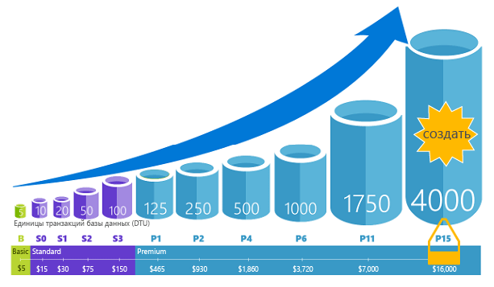Как выбрать нужный тип на основе DTU?
- Использовать калькулятр
- Использовать PowerShell-скрипт
- Использовать Command Line Utility
Eдиницы передачи данных (eDTU)
Определение
eDTU — это единица измерения набора ресурсов (DTU), которые совместно используют несколько баз данных на сервере SQL Azure. Эти базы данных вместе называются пулом эластичных БД
Пулы эластичных БД обеспечивают простое и экономически выгодное решение для управления целевыми показателями производительности для нескольких баз данных с совершенно разными и непредсказуемыми моделями функционирования
Особенности
- Пулу предоставляется заданное количество единиц eDTU по фиксированной цене
- Отдельным БД в эластичном пуле предоставляется возможность гибкого автоматического масштабирования в рамках заданных границ
- БД, на которые приходится значительная нагрузка, могут потреблять больше eDTU, чтобы обслужить имеющийся спрос, при этом базы данных с меньшей нагрузкой смогут потреблять меньше eDTU
- Если у базы данных прогнозируемо низкие показатели использования ресурсов, ее можно переместить из пула и настроить в качестве отдельной базы данных с прогнозируемым объемом ресурсов, который ей необходим
Пример
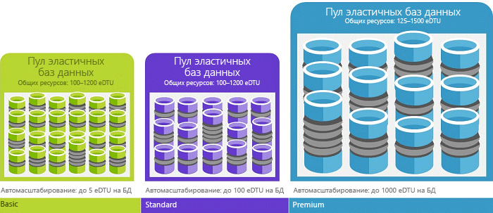Эластичные запросы
С помощью функции запросов к эластичной базе данных можно выполнять запросы Transact-SQL для обращения сразу к нескольким базам данных в базе данных SQL Azure. Эта возможность позволяет создавать межбазовые запросы для доступа к удаленным таблицам. С помощью этой функции можно разворачивать запросы до уровней большого объема данных в базе данных SQL и визуализировать результаты в отчетах по бизнес-аналитике
Преимущества эластичных запросов
- Выполнение запросов к нескольким базам данных SQL Azure на языке T-SQL
- Доступно для всех тарифных планов без ограничения
- Эластичные запросы к удаленным базам данных теперь могут отправлять параметры SQL для выполнения
- Выполнение вызовов удаленных хранимых процедур или удаленных функций с помощью процедуры sp_execute _remote
- Эластичные запросов позволют внешним таблицам ссылаться на удаленные таблицы с разными именами схем или таблиц
Схема работы
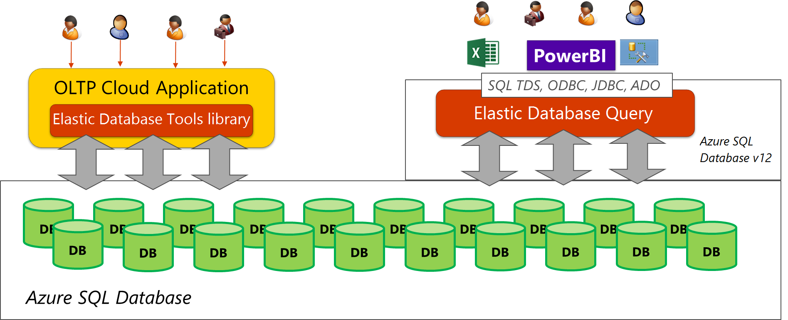Способы применения элемтичных запросов
- Вертикальное секционирование — межбазовые запросы (топология 1): вертикальное разделение данных между несколькими базами данных в рамках одного уровня. Например, все таблицы, связанные с данными инвентаризации, хранятся в одной базе данных, а таблицы, связанные с учетом, — в другой
- Горизонтальное секционирование — сегментирование (топология 2): горизонтальное разделение данных для распределения строк в рамках масштабируемого уровня данных. При таком подходе схемы всех включенных баз данных являются идентичными. Сегментирование может выполняться с помощью (1) библиотеки средств эластичной базы данных или (2) как самостоятельное сегментирование
Пример вертикального секционирования
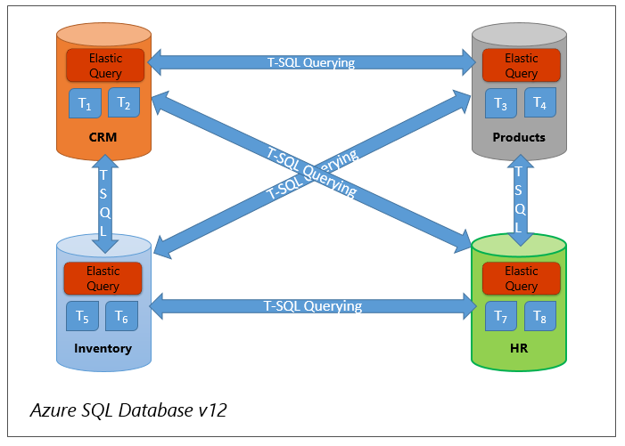Пример горизонтального секционирования
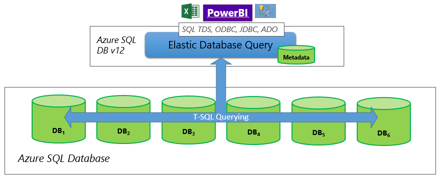Пример запроса
select
w_id as warehouse,
o_c_id as customer,
count(*) as cnt_orderline,
max(ol_quantity) as max_quantity,
avg(ol_amount) as avg_amount,
min(ol_delivery_d) as min_deliv_date
from warehouse
join orders
on w_id = o_w_id
join order_line
on o_id = ol_o_id and o_w_id = ol_w_id
where w_id > 100 and w_id < 200
group by w_id, o_c_id
Пример
Панель управления
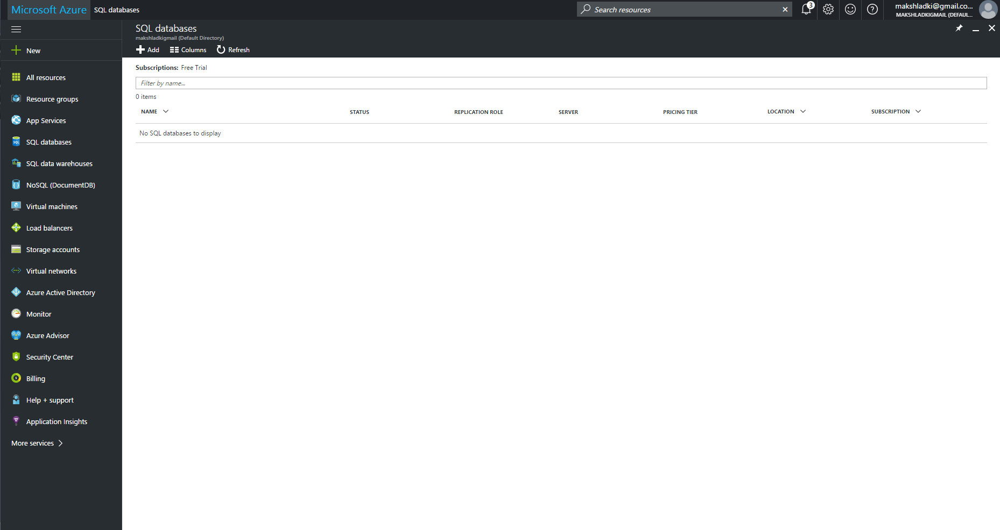Создание БД
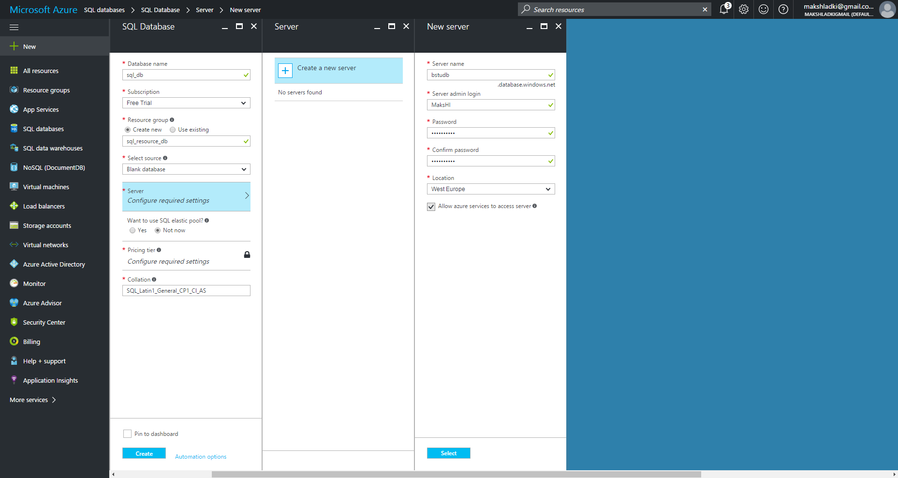Панель управления экземпляров
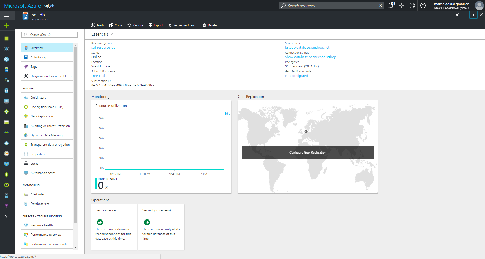Выбор региона
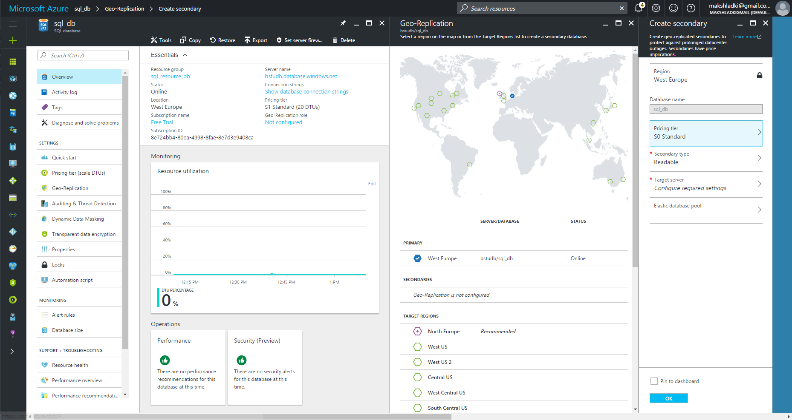Строка подключения
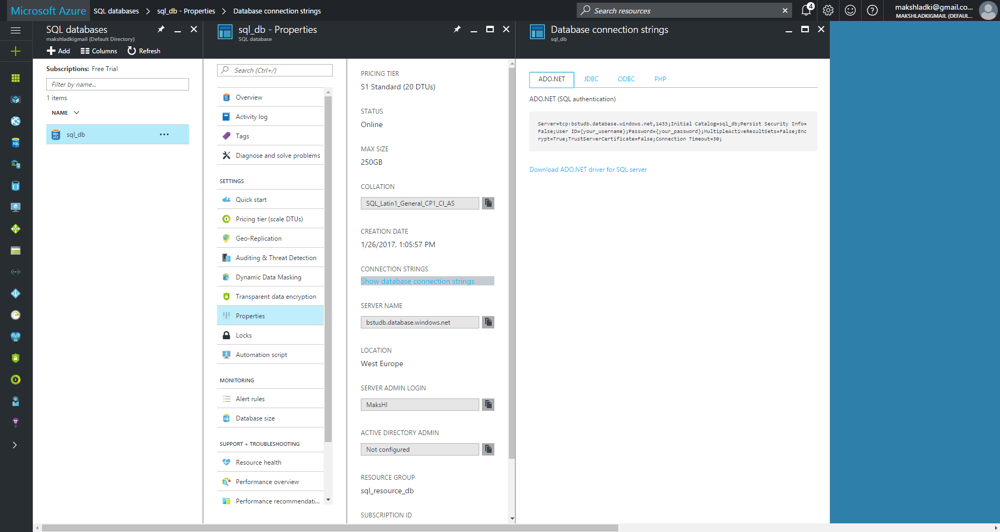Azure DocumentDB
Определение от Microsoft
Полностью управляемая служба баз данных NoSQL, созданная для быстрой и прогнозируемой работы, высокой доступности, гибкого масштабирования, глобального распространения данных и простоты разработки
DocumentDB — это служба баз данных NoSQL без схемы, обеспечивающая широкие возможности запросов SQL со знакомым синтаксисом, согласованность и небольшую продолжительность задержек для данных JSON: 99 % операций чтения обрабатываются менее 10 миллисекунд, а 99 % операций записи — менее 15 миллисекунд
Схема работы
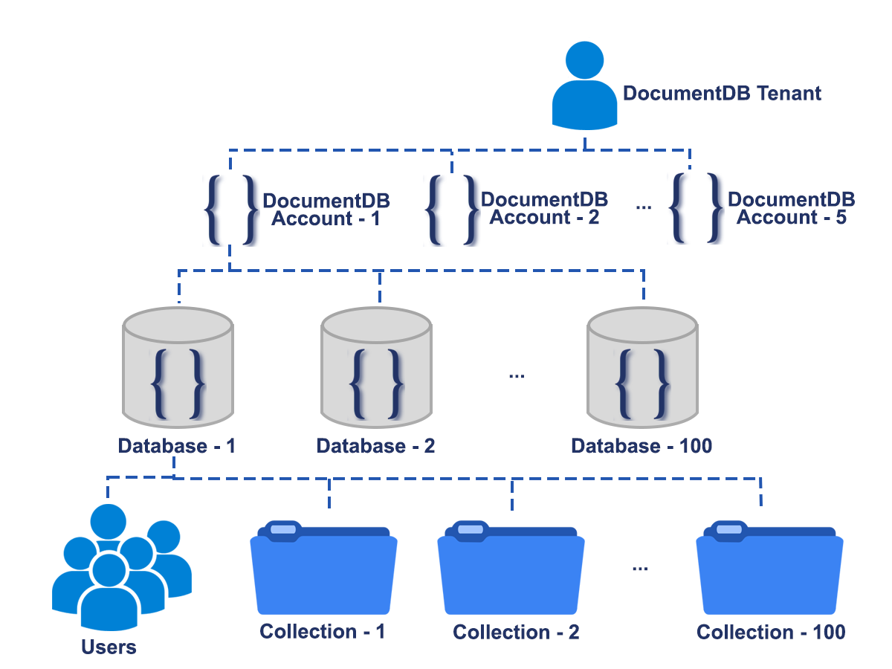Особенности
- Гибко масштабируемые пропускная способность и объем хранения - база данных легко масштабируется в соответствии с потребностями, хранятся на SSD, поддерживает контейнеры для хранения данных JSON, практически неограниченный размеров хранилища и пропускная способность
- Репликация между несколькими регионами - позволяет разрабатывать приложения, которым требуется глобальный доступ к данным, при этом обеспечивая компромиссы между согласованностью, доступностью и производительностью с соответствующими гарантиями
- Классический SQL-синтаксис
- Безблокировочную технологию индексирования с высокой степенью параллелизма и структурированием журналов для автоматического индексирования содержимого JSON документов
Особенности
- Настраиваемые уровни согласованности — 4 уровня согласованности: strong (сильная), bounded-staleness (ограниченная), session (уровень сеанса) и eventual (согласованная в конечном счете)
- Полная управляемость - отсутствие необходимости управления БД и вычислительными ресурсами. Автоматическое сохранение и защита от региональных сбоев
- Открытая структура - получение доступа ко всей функциональности БД (CRUD, запросы и обработку JS) через REST API
- Выполнение операторов (DML) из кода JS в изолированной транзакции
- Выполнение JS в БД — реализация логики приложения в виде хранимых процедур, триггеров и пользовательских функций (UDF), использующих стандартный JS
Особенности
- Простая и открытую модель RESTful API
- Все ресурсы в DocumentDB моделируются и хранятся в виде документов JSON
- Ресурсы управляют элементами (документы JSON и метаданные) и потоками (коллекции элементов). Наборы элементов содержатся внутри соответствующих потоков
- Учетная запись базы данных состоит из набора баз данных, каждая из которых содержит несколько коллекций
- Коллекция содержит хранимые процедуры, триггеры, определяемые пользователем функции, документы и соответствующие вложения
- БД включает связанных с ней пользователей, каждый из которых обладает набором разрешений для доступа к коллекциям, хранимым процедурам, триггерам, определяемым пользователем функциям, документам и вложениям
Запросы SQL
- Специальный итерфейс для запроса документов JSON
- Язык поддерживает грамматику подмножества ANSI SQL и добавляет глубокую интеграцию объектов, массивов, создания объектов и вызова функций JS
- Предоставляет свою модель запросов без явных схем или подсказок индексации от разработчика
- Пользовательские функции (UDF) могут быть зарегистрированы в DocumentDB, и ссылаться на них можно как на часть SQL-запроса, тем самым расширяя грамматику для поддержки логики пользовательского приложения
- Пользовательские функции записываются в виде программ JS и выполняются в базе данных
- Для .NET DocumentDB предоставляет поставщик запросов LINQ в составе пакета SDK
Транзакции и выполнение JavaScript
- JavaScript может быть зарегистрирован для выполнения в качестве триггера, хранимой процедуры или пользовательской функции (UDF).
- Триггеры и хранимые процедуры могут создавать, читать, обновлять и удалять документы, в то время как определяемые пользователем функции выполняются в рамках логики выполнения запроса без доступа на запись в коллекции.
- Выполнение JavaScript в DocumentDB моделируется по принципам, поддерживаемым реляционными СУБД, с JavaScript в качестве современной замены Transact-SQL.
- Вся логика JavaScript выполняется в транзакции ACID с изоляцией моментального снимка. В ходе его исполнения, если код JavaScript генерирует исключение, то вся транзакция прерывается.
Коллекции
Коллекция DocumentDB — контейнер для документов JSON, является единицей масштабирования для транзакций и запросов
- Гибкое хранилище документов на базе SSD - коллекция является гибкой, автоматически увеличивается и уменьшается по мере добавления или удаления документов
- Автоматическое секционирование - число секций в коллекции определяется по размеру хранилища и пропускной способности, выделенных для коллекции
- Автоматическое индексирование — автоматическая индексация документов, не требующая указания схемы или вторичных индексов и доступна благодаря оптимизации записи, безблокировочной и оптимизированной журнально-структурированной технологии обслуживания индексов
- Настраиваемые политики индексирования - позволяет настроить соотношения объема и производительности для интервала и хэш-запросов для конкретных шаблонов пути. Можно отключать автоматическое индексирование и добавлять только выбранные документы в индекс
- Изначально секционирует данные для обеспечения высокой доступности и масштабируемости
- Хранилище на базе SSD с низкой задержкой и временем ответа
- Поддержка уровней согласованности, таких как bounded-staleness (ограниченная), session (уровень сеанса) и eventual (согласованная в конечном счете), обеспечивает оптимальное соотношение затрат и производительности
- Гибкая модель ценообразования, в которой место для хранения и пропускная способность измеряются независимо
- Модель зарезервированной пропускной способности DocumentDB позволяет вести учет по количеству операций чтения и записи, а не по ресурсам ЦП, памяти и операций ввода-вывода базового оборудования
- Структура DocumentDB допускает масштабирование для огромного числа запросов, измеряемого миллиардами запросов в день
Пример
Структура документа
{
"id": "AndersenFamily",
"lastName": "Andersen",
"parents": [
{ "firstName": "Thomas" },
{ "firstName": "Mary Kay"}
],
"children": [
{
"firstName": "Henriette Thaulow", "gender": "female", "grade": 5,
"pets": [{ "givenName": "Fluffy" }]
}
],
"address": { "state": "WA", "county": "King", "city": "seattle" },
"creationDate": 1431620472,
"isRegistered": true
}
Запрос 1
SELECT * FROM Families f
WHERE f.id = "AndersenFamily";
Результат
[{
"id": "AndersenFamily",
"lastName": "Andersen",
"parents": [
{ "firstName": "Thomas" },
{ "firstName": "Mary Kay"}
],
"children": [
{
"firstName": "Henriette Thaulow", "gender": "female", "grade": 5,
"pets": [{ "givenName": "Fluffy" }]
}
],
"address": { "state": "WA", "county": "King", "city": "seattle" },
"creationDate": 1431620472,
"isRegistered": true
}]
Запрос 2
SELECT {"Name":f.id, "City":f.address.city} AS Family
FROM Families f
WHERE f.address.city != f.address.state
Результат
[{
"Family": {
"Name": "AndersenFamily",
"City": "seattle"
}
}]
Пример
Панель управления экземплярами
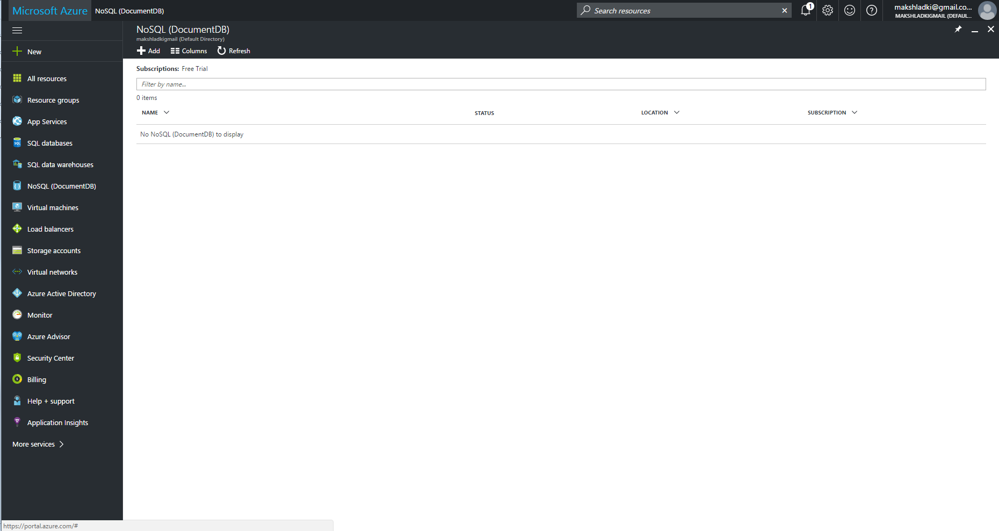Создание БД
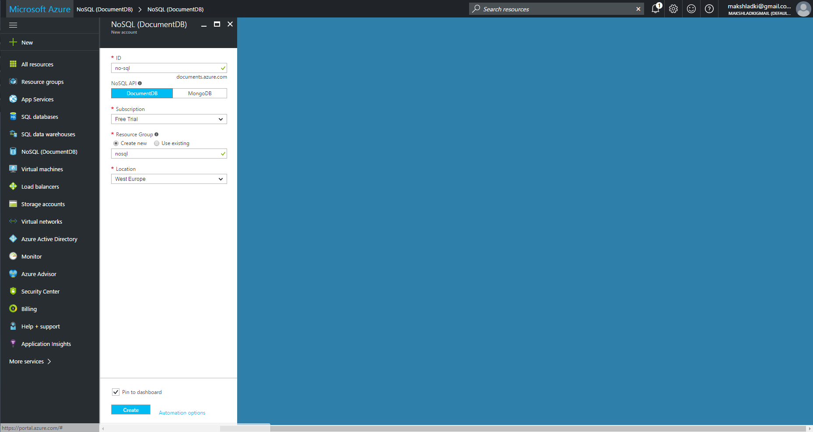Панель упраления экземпляром
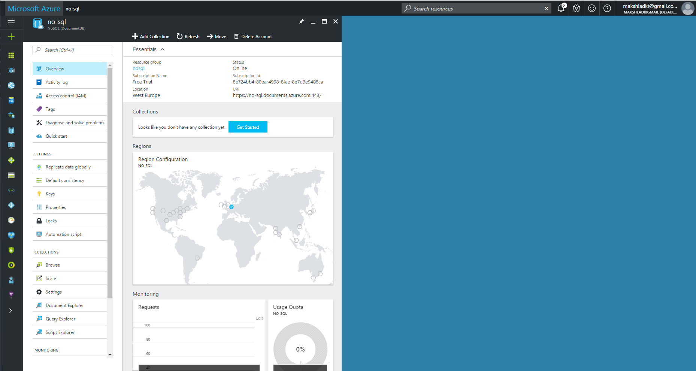Выбор SDK
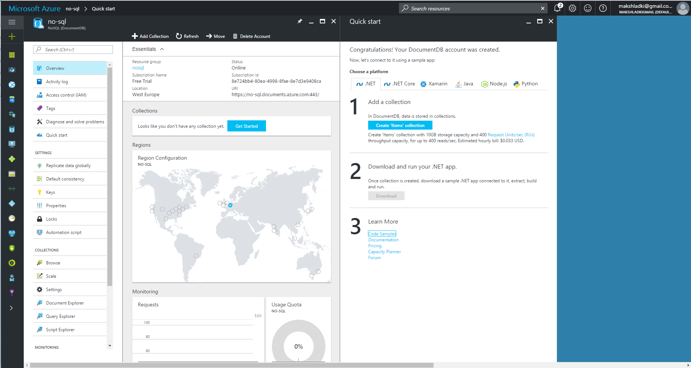Создание коллекции
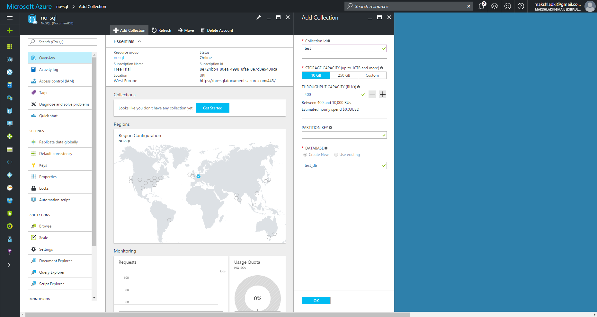Упраление коллекцией
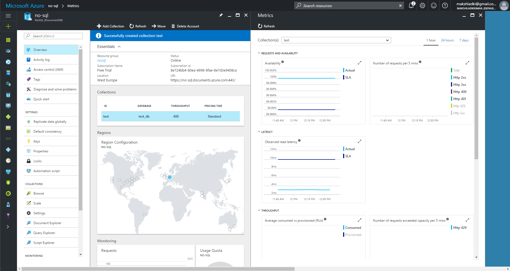Ключи
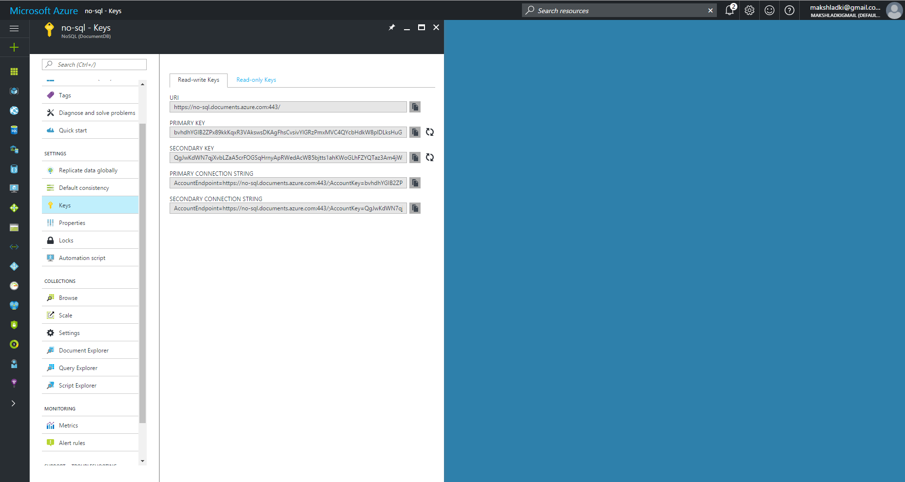Virtual Network
Виртуальная сеть Azure
Определение
Виртуальная сеть (VNet) Azure — это представление сети в облаке. Это логическая изоляция облака Azure, выделенного по подписке подписке с возможностью полного контроля блоков IP-адресов, параметров DNS, политик безопасности и таблиц маршрутизации.
Схема локальной сети
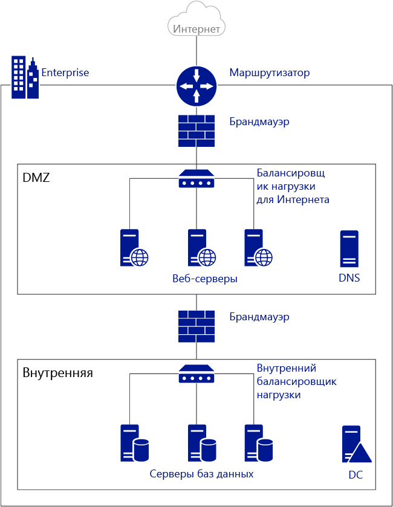Схема виртуальной сети Azure
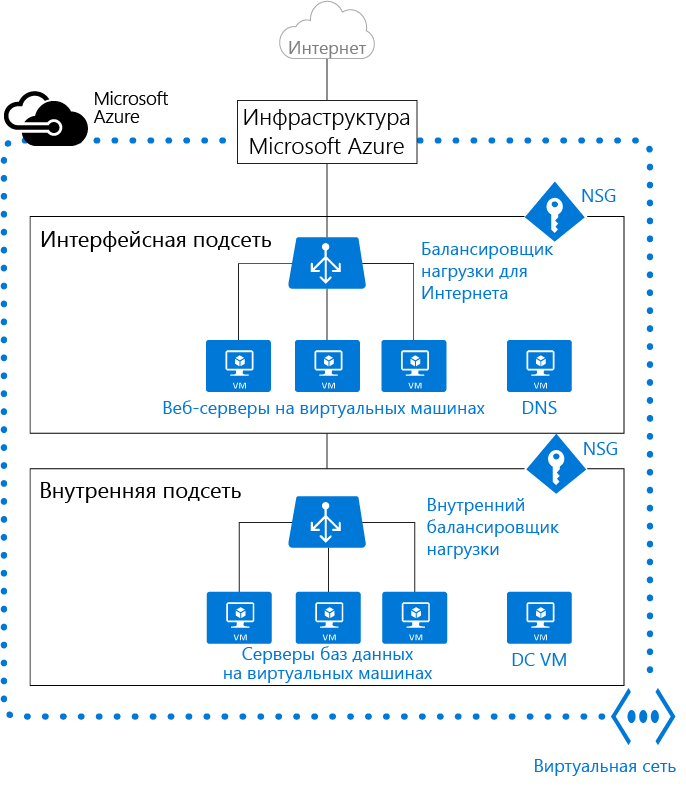Преимущества виртуальных сетей
- Изоляция - сети изолированы друг от друга. Позволяет создавать отдельные сети для разработки, тестирования и эксплуатации, использующие одинаковые блоки адресов CIDR
- Доступ к Интернету - интернет доступен по умолчанию для ВМ IaaS и экземпляров PaaS. Контроль доступа на основе групп безопасности сети
- Доступ в виртуальной сети - PaaS и IaaS могут запускаться в одной виртуальной сети и подключаться друг к другу с помощью частных IP, даже если они находятся в разных подсетях, без шлюзов, пиринга и общедоступных IP
- Разрешение имен - автоматическое разрешение имен. Можно развернуть собственные DNS-серверы
- Подключение - виртуальные сети подключаются к локальным ЦОД через VPN "сеть—сеть" или Azure ExpressRoute
Типы IP-адресов в виртуальной сети
- Общедоступные - позволяют ресурсам Azure подключаться к Интернету и другим общедоступным службам Azure, таким как кэш Redis для Azure и концентраторы событий Azure
- Частные - обеспечивают связь между ресурсами в виртуальной сети, а также теми, которые подключаются через VPN, без использования IP-адресов с поддержкой маршрутизации в Интернет
Общедоступные IP-адреса
- Виртуальные машины
- Балансировщики нагрузки, доступные в Интернете
- VPN-шлюзы
- Шлюзы приложений
Способ выделения
- Динамический (по умолчанию) - IP-адрес выделяется когда клиент запускает (или создает) связанный ресурс (ВМ, балансировщик нагрузки и т.д.). Если остановить или удалить ресурс, IP-адрес освобождается. При перезапуске ресурса адрес изменяется
- Статический - IP-адрес назначается немедленно и освобождается только тогда, когда клиент удаляете ресурс или задаете динамический способ выделения. Используется, если IP-адрес связанного ресурса не должен изменяться
Причины использования статических адресов
- Конечным пользователям необходимо обновлять правила брандмауэра для взаимодействия с ресурсами Azure
- Разрешение DNS-имени, в рамках которого изменение IP-адреса влечет за собой необходимость обновить записи A
- Ресурсы Azure взаимодействуют с другими веб-приложениями или службами, которые используют модель безопасности, основанную на IP-адресах
- Клиент использует SSL-сертификаты, связанные с IP-адресом
Ценовая политика
В большинстве случаев общедоступные IP-адреса бесплатны. Существует номинальная плата за использование дополнительных или статических общедоступных IP-адресов
Итого
| Ресурс | Связанный IP | Дин. | Ст. |
|---|---|---|---|
| Виртуальная машина | Сетевой интерфейс | + | + |
| Подсистема балансировки нагрузки | Конфигурация клиентской части | + | + |
| VPN-шлюз | Конфигурация IP шлюза | + | - |
| Шлюз приложений | Конфигурация клиентской части | + | - |
Частные IP-адреса
Частный IP-адрес выделяется из диапазона адресов подсети, к которой подключен ресурс
- Виртуальные машины
- Внутренние балансировщики нагрузки
- Шлюзы приложений
Способ выделения
- Динамический (по умолчанию) - IP-адрес выделяется из подсети ресурса через протокол DHCP. Во время остановки и запуска ресурса этот IP-адрес изменяется
- Статический - необходимо указать допустимый IP-адрес, который является частью подсети ресурса. Не изменяется при перезапуске ресурса
Причины использования частных статических адресов
- Для виртуальных машин, работающих в качестве контроллеров домена или DNS-серверов
- Для ресурсов, в которых правилам брандмауэра нужно использовать IP-адреса
- Для ресурсов, доступ к которым другие приложения и другие ресурсы получают через IP-адрес
| Ресурс | Связанный IP | Дин. | Ст. |
|---|---|---|---|
| Виртуальная машина | Сетевой интерфейс | + | + |
| Подсистема балансировки нагрузки | Конфигурация клиентской части | + | + |
| шлюзу приложений | Конфигурация клиентской части | + | + |
Подсети
Подсеть — это диапазон IP-адресов в виртуальной сети. Виртуальную сеть можно разделить на несколько подсетей для организационного удобства и безопасности. Имеется механизм настройки таблиц маршрутизации и групп безопасности сети для подсети
Особенности
- Автоматическое связывание - ВМ и другие компоненты связываются между собой атоматически даже если они находяься в разных подсетях, не нужно указывать шлюз
- Автоматическое подключение через Интернет
- Атоматическое подключение в локальной сети (при наличии гибридного подключения Azure к локальному ЦОД)
- Ипользование системных маршрутов для определения передачи IP-трафика
Случаи применение системных маршрутов
- В одной и той же подсети
- Из одной подсети в другую в виртуальной сети
- Из виртуальных машин в Интернет
- Из одной виртуальной сети в другую через VPN-шлюз
- Из виртуальной сети в локальную сеть через VPN-шлюз
Правила системных марсшрутов
- Локальное правило виртуальной сети - правило создается автоматически для каждой подсети в виртуальной сети. Указывает, что существует прямая связь между виртуальными машинами в виртуальной сети, без промежуточного следующего прыжка
- Правило локальной среды - правило применяется для всего трафика, предназначенного для локального диапазона адресов; использует VPN-шлюз в качестве назначения следующего прыжка
- Правило Интернета - правило обрабатывает весь трафик, направляемый в общедоступный Интернет (префикс адреса 0.0.0.0/0). Использует шлюз Интернета инфраструктуры в качестве следующего прыжка для всего трафика, предназначенного для Интернета
Пример 1
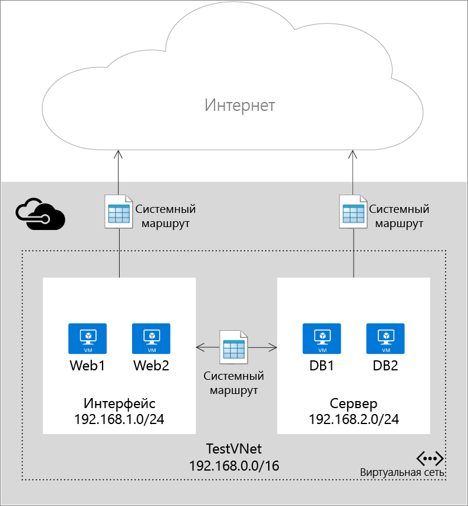Пример 2

Пользовательский маршрут
Принудительное туннелирование для доступа к Интернету виртуальных устройств в среде Azure через локальную сеть клиента
Инфраструктура предоставляет возможности пользователю создавать свою таблицу маршрутов. Можно использовать несколько таблиц маршрутов, и одна таблица маршрутов может быть связана с одной или несколькими подсетями. НО каждая подсеть может быть связана только с одной таблицей маршрутов!
Принцип работы
- Пока c подсетью не связана таблица маршрутов, она использует системные маршруты
- После установления связи маршрутизация выполняется по совпадению наиболее длинного префикса (LPM) среди определяемых пользователем маршрутов и системных маршрутов
- При наличии более одного маршрута с одинаковыми совпадающими значениями LPM маршрут выбирается по источнику в следующем порядке: 1) определяемый пользователем маршрут; 2) маршрут BGP (если используется ExpressRoute); 3) Системные маршруты
Пиринг
Определение
Пиринговая связь между виртуальными сетями — механизм подключения между двумя виртуальными сетями, находящимися в одном регионе, через магистральную сеть Azure. После создания пиринговой связи две виртуальные сети выглядят как одна при любом подключении. Они по-прежнему управляются как отдельные ресурсы, но теперь находящиеся в них виртуальные машины могут взаимодействовать друг с другом напрямую через частные IP-адреса
Преимущества
- Подключение между ресурсами в разных виртуальных сетях, характеризующееся низкой задержкой и высокой пропускной способностью
- Возможность использовать ресурсы, такие как сетевые устройства и VPN-шлюзы, в качестве транзитных точек в пиринговой виртуальной сети
- Возможность подключения виртуальной сети, в которой используется модель Azure Resource Manager, к виртуальной сети, в которой используется классическая модель развертывания, с обеспечением полной связи между ресурсами в этих виртуальных сетях
Требования
- Две виртуальные сети должны находиться в одном регионе
- Для настройки пиринговой связи пространства IP-адресов используемых виртуальных сетей не должны перекрываться
- Пиринговая связь устанавливается между двумя виртуальными сетями. Производные переходные связи не поддерживаются
- Пиринговую связь можно установить между виртуальными сетями в двух разных подписках, если ее разрешает привилегированный пользователь обеих подписок и подписки связаны с одним и тем же клиентом Active Directory
- Для обмена данными между ВМ в пиринговых виртуальных сетях нет дополнительных ограничений пропускной способности, НО объем передаваемого трафика ограничивается размером ВМ
Пример
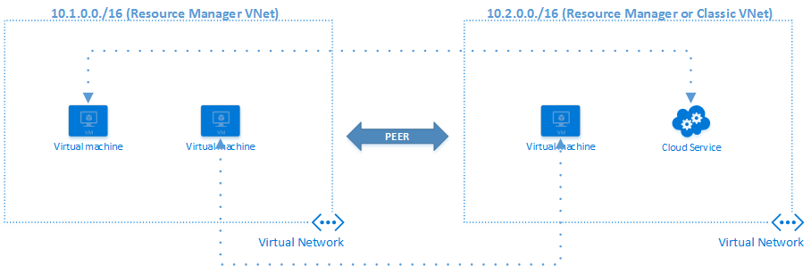Сетевые интерфейсы
Определение
Сетевой интерфейс обеспечивает взаимодействие между виртуальной машиной и сетью с базовым программным обеспечением. В этой статье описывается сетевой интерфейс и его применение в рамках модели развертывания Azure Resource Manager.
Особенности
- Это ресурс, который можно создать, настроить, удалить
- При создании должен быть подключен к одной подсети в одной виртуальной сети. Для созданного интерфейса можно изменить подсеть, но нельзя изменить виртуальную сеть
- Имеет назначенное имя, которое нельзя изменить после создания. Имя должно быть уникальным в пределах группы ресурсов Azure, но не обязательно уникальным в пределах подписки, расположения Azure или виртуальной сети, к которой он подключен. В одной подписке может быть создано несколько интерфейсов
- Может быть подключен к виртуальной машине, но только к одной и обязательно созданной в том же расположении, что и сам сетевой интерфейс
Особенности
- Имеет MAC-адрес, который закрепляется за сетевым интерфейсом до тех пор, пока он подключен к виртуальной машине. Сохраняется при перезапуске ВМ (с помощью функций ОС) или при остановке (освобождении) с последующим запуском через портал
- Должен иметь один основной частный (статический или динамический) IPv4
- Может иметь один присвоенный общедоступный IP-адрес
- Поддерживает ускорение сети с технологией виртуализации операций ввода-вывода с единым корнем (SR-IOV) для ВМ с ОС Windows Server
- Может получать трафик, не предназначенный для присвоенных ему частных IP-адресов, если для этого сетевого интерфейса включена IP-пересылка
Спасибо за внимание